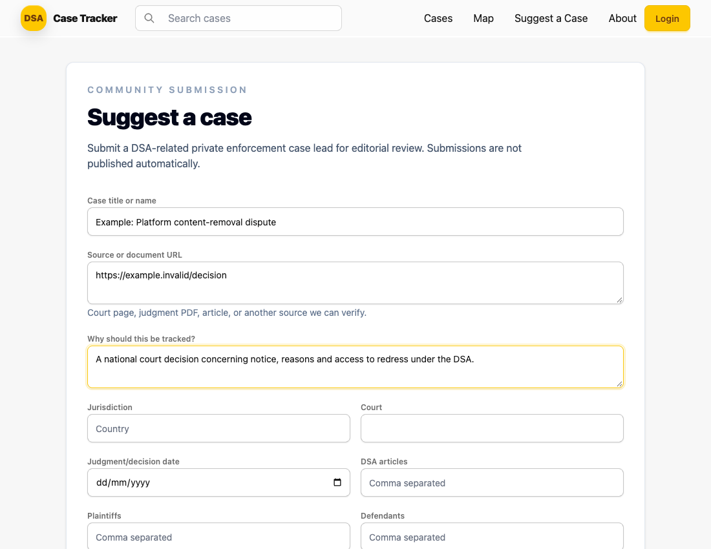
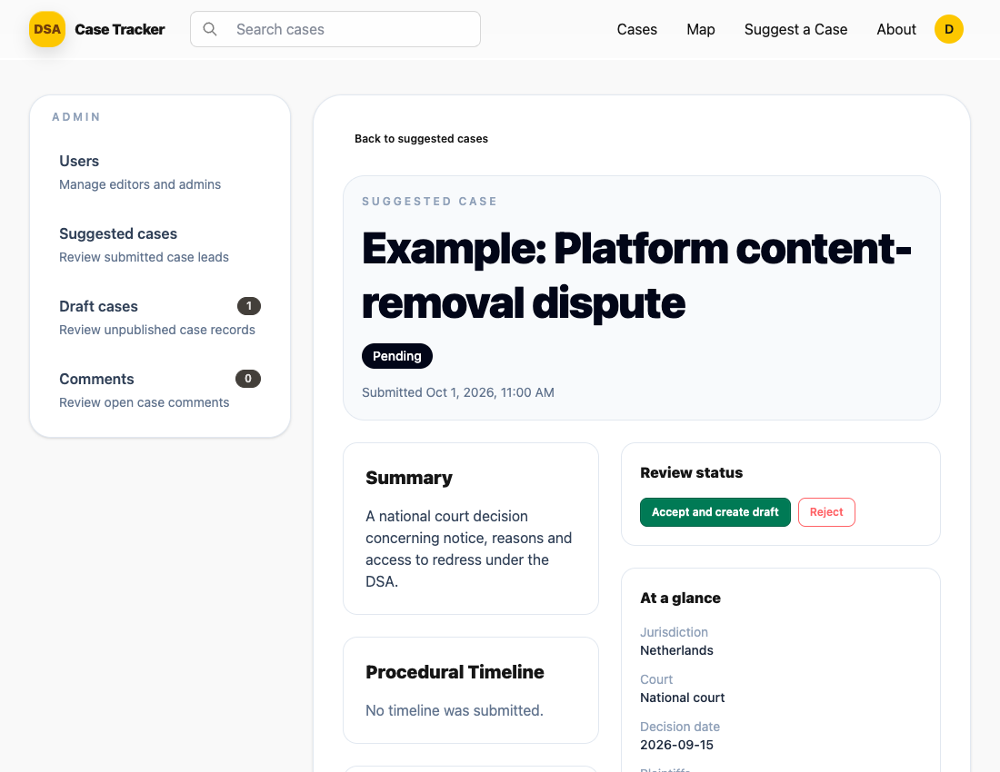
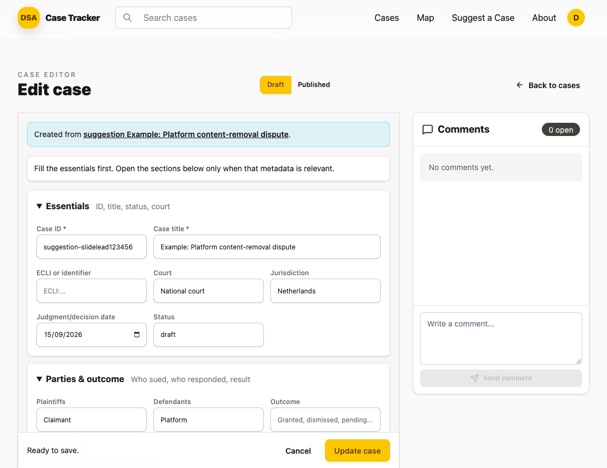

1Community submission
Suggest a case
→

Anyone can suggest a case.
Submit the source, case details
and a short explanation.
2Private admin queue
Review & decide
→

Only designated admins review.
Accept to create a draft,
or reject the suggestion.
3Accepted suggestion
Create a private draft

Case details and sources retained.
Edit the draft, then make
a separate publication decision.
Human review before publication.No automatic publishing · No duplicate drafts on retry
Example data · Screenshots from the implemented application